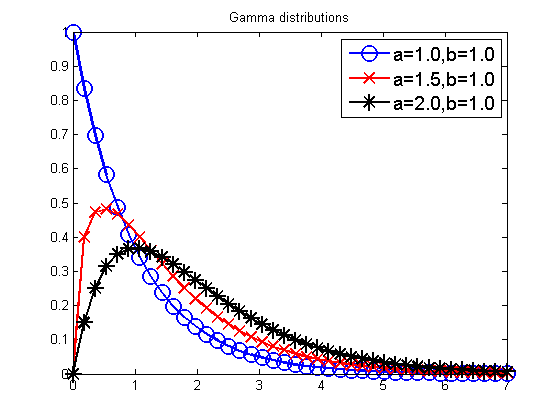

Plot a Gamma Distribution
%as = [1 1.5 2 1 1.5 2]; bs = [1 1 1 1.5 1.5 1.5]; as = [1 1.5 2]; b = 1; bs = b*ones(1,length(as)); figure; [styles, colors, symbols] = plotColors; for i=1:length(as) a = as(i); b = bs(i); xs = linspace(0, 7, 40); ps = gampdf(xs, a, 1/b); plot(xs , ps, styles{i}, 'linewidth', 2, 'markersize', 12); hold on legendStr{i} = sprintf('a=%2.1f,b=%2.1f', a, b); end legend(legendStr, 'fontsize', 14); title('Gamma distributions') printPmtkFigure('gammaDist');